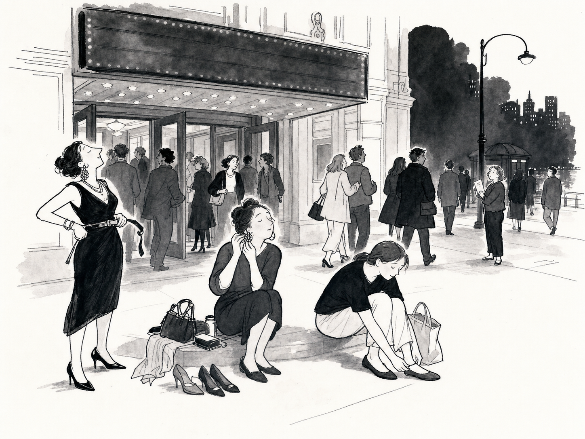
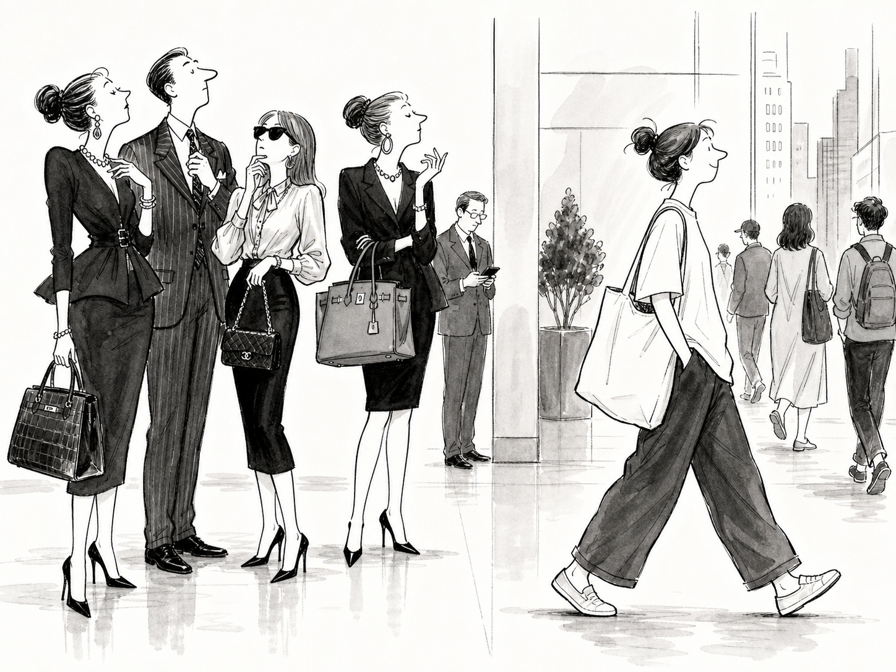
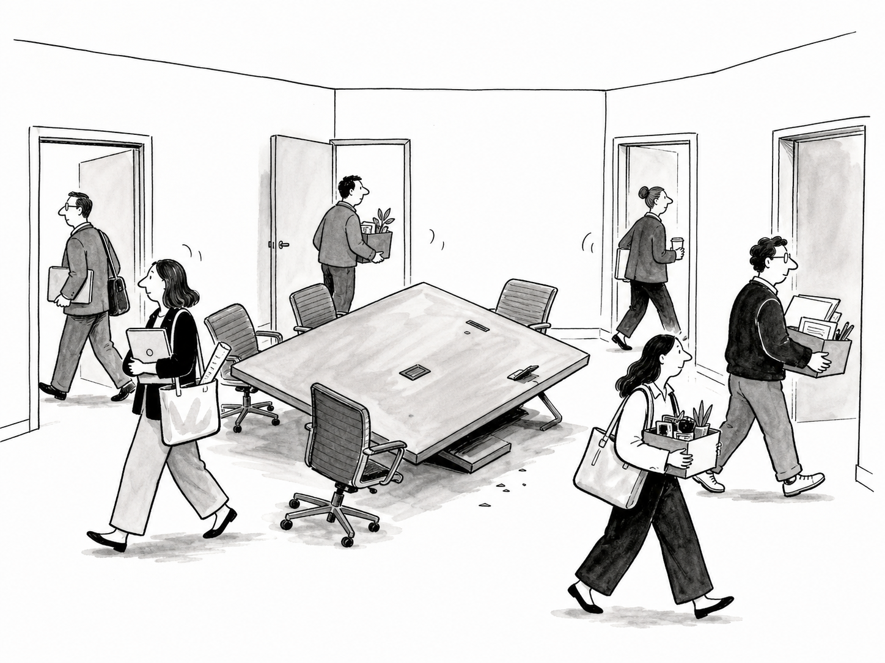

那天喝酒。和一个95后聊起审美，她说：有些东西一看就是经济上行周期特有的，因为现在的审美没那么用力，都比较自然。
之前听到的“经济上行”都是短视频段子，而那一刻聊起来的东西恰好是我身边的产品。一个切近的事物被冠以“经济上行”的标签，我就卡壳了一下，开始反思自己的审美和行事风格，以及琢磨这个时代的审美和行事风格。
我是上行时代的余孽 – 这话是家属说的，虽然是玩笑但说得真准确，就放进了个人简介里。余孽的意思是，完整地成长和受益于上行时代，也幸运地能在下行时代存活。但余孽如我，确实也依然相信努力、坚持、责任感、体面、宏大目标这些很上行的东西，所以经常会产生“怎么会有这样的流行”和“怎么会有这样的做事风格”的疑惑。很多认识的品牌老板也有，由此会带来对产品、渠道、营销各种决策的不确定，能戳中算撞大运，戳不中也很难总结出什么有用的经验。总之，没有切身体感的生意，风险蛮大的。
借此酒后的反思和琢磨，想到一些有趣的点，分享给你们。
总而言之，上行时代人们的心情犹如要去看一场大戏。
是知道有一大场精彩在前面的，所以你会提早很多做准备，会琢磨要穿什么戴什么烫什么头发，会呼朋唤友地叫上一大堆人，会在戏前找个馆子吃点好的、或者找地方坐坐聊聊大戏的八卦和周边。人们谈起看戏这件事都是高兴的，由衷地认同戏里的情节和价值观，并真心喜欢戏里的人。生活因为这出戏而变得更美好，人们心甘情愿地围着转，并因此而觉得充满动力。

下行时期的心情，就像大戏散场。
最精彩的已经过去，接下来无非是聊个尾声，然后回家。坐了好几个小时腰酸背痛，松开勒着的腰带，摘下太重的耳环，最好再换一双舒服的平底鞋。戏既然已散场，就没什么一定要做的事了，大家各做打算各找各妈，能约起来的也就一小撮一小撮地约。路边也有小一点儿的剧目招揽，但朋友都已散去，并也知道这些戏并没什么大意思，寥寥看一眼就算了。剧里的事如黄粱一梦，故事就只是故事，戏里的人也跟着散场的人群一起慢慢走，好像并没有舞台上这么特别了。人们闲走在散场的路上，会因为踢一块小石头、看见一只小野猫而短暂地高兴。
由此，也就带来
穿着打扮这件事，在上行时代是有社会功能性意义的。比如，上班穿好一点，给领导同事印象好一点，有利于升职加薪；出去商业场合穿好一点，有利于获得资源机会；出门玩耍穿好有一点，有利于遇上谁谈个恋爱。就是什么目的也没有，穿好一点也能让自己有精神，出门气运好一点。
既然是有社会功能性意义，所以“穿得好”不仅是要过自己这关，别人也得认可，也因此上行时期的审美有一些很共识的东西。比如讲，你现在去想2000-2010年间的穿着打扮，都是武装到牙齿、提着精神、立住脖梗，像孔雀一样。很多衣服都是收腰、丝绸、贴身，再加高跟鞋和大型重工的皮包，不同细节有不同的搭配讲究，每个人也有每个人自己的穿着讲究体系，讲究程度和人们对所要出席场合的重视程度有关。

下行时代这种穿衣打扮的社会功能意义大幅度减弱了。大戏既已散场，为了各种场合穿好一点给别人看这种事就可有可无，更多是为自己。是“我喜欢这么穿”为先，而不是“在办公室要这么穿”或是“出去哪里玩要这么穿”。即使真的是为了去哪里玩特地打扮了一下，也要显得是“我自己要这么穿”而不是“我觉得这个场合该这么穿”。
所以一部分人开始走“毫不费力”风格，也就是“不管去什么场合我都能直接套上就走”。大T恤、大卫衣、帆布袋在疫情后更流行了，需要吸肚子挺脖梗踮脚尖的款式迅速退流行，而在这个方向上还想努力时髦、或者确实不能穿得像家居服一样出现的人，开始走“虽然是大T恤卫衣帆布包但材质剪裁品牌都高级”的静奢和精致运动路线，比如the Row，再比如很多品牌都出了高级料子工艺但帆布袋样子的手袋。
另一部分有爱好圈子的，开始穿得更圈子化，也就是“没什么大期待的生活里也给自己找点激动的小乐子”，比如随着cos、亚文化流行起来的y2k，随着网文游戏流行起来的新汉服，或者是哪个明星的限量联名款，再往外说，各种IP玩偶的流行也属于这类。
再延伸到各种设计艺术文化上，人们也会喜欢那些“鼓励做自己”的作品，而非上行时代的“展现优秀技艺”，比如更原生的不用费力理解的表达、更违背常理的创意、更反庙堂的形态。
因为大戏散场，所以那些属于开戏前的行为，在散场后都显得格格不入、令人讨厌。
最典型就是不再众星捧月般崇敬“努力且取得了回报”的人。因为知道机遇不同，戏在短时间内也很难再开一场大的，所以那些努力的标杆，放到如今已经没有任何对照意义。而对自己的努力和成绩仍然滔滔不绝、绝口不提大戏已落幕、并贬损渐渐离场的人不够坚持不够尽力的人，就很容易遭到反噬，即使是李佳琦。相对的，即使确实在开戏前得了好、但也能在散场时表现出散场心情的，就能依然被时代接受并喜欢，比如鲁豫，和最近红起来那个北大教授程乐松。
其次，就是祖上传下来的复杂规矩们遭到了纷纷的摒弃。比如为了争取资源而不得不忍受的酒桌文化，比如各种意义不大只图混个圈子的大会小会会中会，比如无穷无尽的周报月报，比如创业圈流行过的走戈壁，比如那些冗长复杂排版精致如今已经堂而皇之被AI工具代劳的PPT，诸如此类的表演性勤奋，如此费力而并换不来相衬回报的事，都已散场，还搞那么复杂痛苦做啥呢？
以及，所有崇尚先苦后甜的价值观都遭人反感。且不说先苦能不能带来后甜，先苦后甜本身也有一个基础预设就是“后面一定有甜的”，所以要甜就现在甜起来，苦肯定是不行的，即使跟着一个极其诱人的承诺。无论怎样的承诺，在大戏散去时都难以相信。
由于职场环境的愈发糟糕，团队协作变得暧昧起来。团队依然是按照既定的程式在工作，但彼此之间的敌对和防备多了很多，变得更公事公办的样子。主动地、交心地、all in地为团队贡献，变得风险很大，越来越多人像在打躲避球一样工作，一边瞄着能把球砸向哪里，一边警惕自己被砸到。
而与此相对的，现在既有正职也有副业的人真是越来越多了。
我在不少场合遇到过这样的。先拿正职出来跟你谈谈，看看气氛，再忽然说，我还有几个副业，也看看合作机会？
第一次听我哑然好久，后来遇到多了就慢慢习惯。无论大公司小公司，好像每个人都在鼓捣自己的事。

这些都和大戏散场时的氛围有关。灯光渐灭，观众也离开，被迫还要继续坚守的工作人员，本身就处于一个尴尬的位置。以及，剧目既已结束，当然各找各妈，有不同心思也是正常事。上行时代人们齐心协力地坐在一张桌子上分工合作，是因为相信桌子会越来越大，自己也能越分越多；下行时代么，最担心的是万一这张桌子翻了还能往哪儿坐，不如先走马观花看看后路。
开场有开场的心情，散场有散场的心情。
开场前的人图的是未来。人们精心打扮、努力社交、按规则玩游戏、和不喜欢的人密切合作，是因为相信这些能换来以后更高级的身份、更好的圈子、更多钱、更棒的体验、更多的享受。而散场的人，看过了曾经，也看得见未来，所以很难再相信“现在的投入会换来未来的回报”这件事。
你拿开场时的吆喝，是带不动散场时的人群的。
在懒懒散散、各找各妈的集体氛围背后，是并没有什么可以被相信了。并且这种不相信，证据确凿，并不是你一个品牌一家企业一个老板可以改变的。
你想再次把人激发起来，让他们打扮、社交、玩游戏、密切合作，首先肯定得降低你自己的期待值，这些行为的程度肯定不如以前，然后再去想自己能提供什么眼下立即就能兑现的、确定的、轻松的、毫不费力的东西，如果这些东西还能显贵显好，那就更好了。
要做散场时的生意，我有几个建议：
不要再鼓励努力，鼓励人们去找到自己的小追求小享受，就像路边的小石子小野猫
毫不犹豫的便宜、毫不复杂的审美、毫不难懂的功能
明白对你的员工来说，现时开心比先苦后甜更有意义，并且不要再絮絮叨叨你曾经的努力和成功
呐，大概就这些。